first-party guest records built and segmented
PMS exports · web forms · online check-in
I design digital journeys that turn travellers into loyal guests.
See my work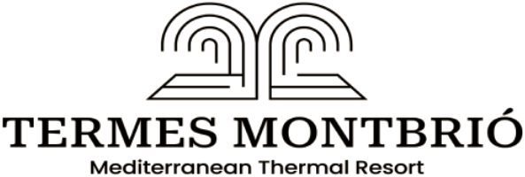
I build full-funnel digital marketing for hotels.
SEO & Information Architecture — sitemap, keyword research, FAQ/GEO content
Travellers used to search, now they also ask — both start from the same demand.
Brand & Content Strategy — one method, three properties in Spain and France
Most hotels say “we have many audiences.”
Buyer persona & retargeting system · Termes Montbrió
Few can say who is allowed to speak, sell, and shape price.
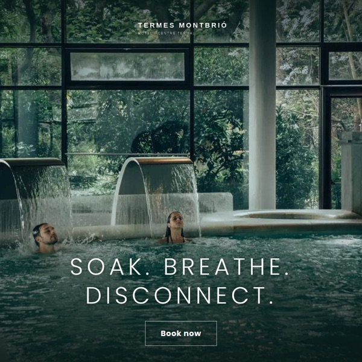
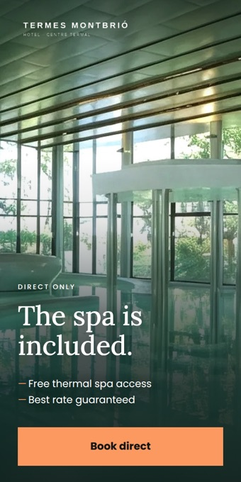
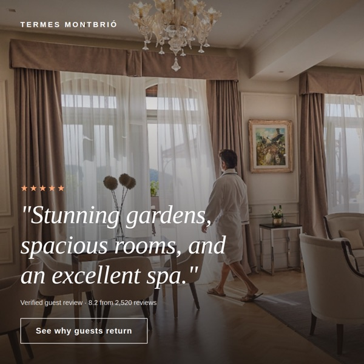
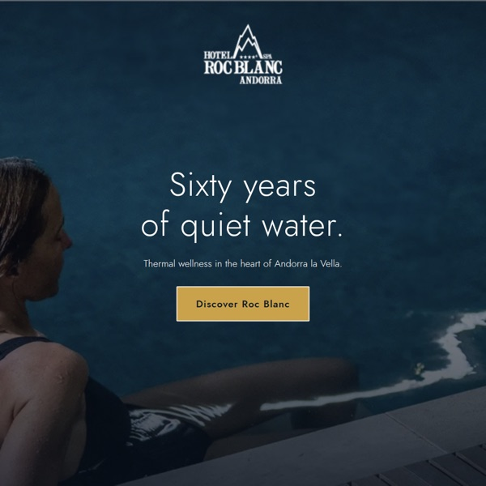
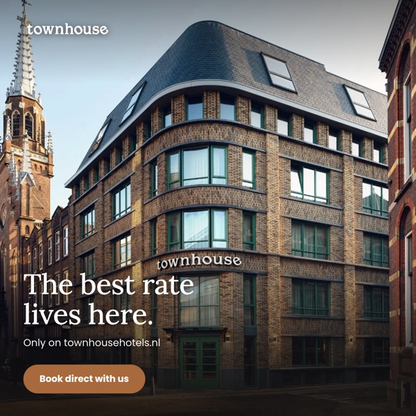
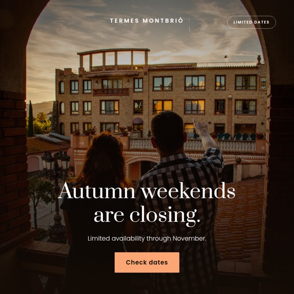
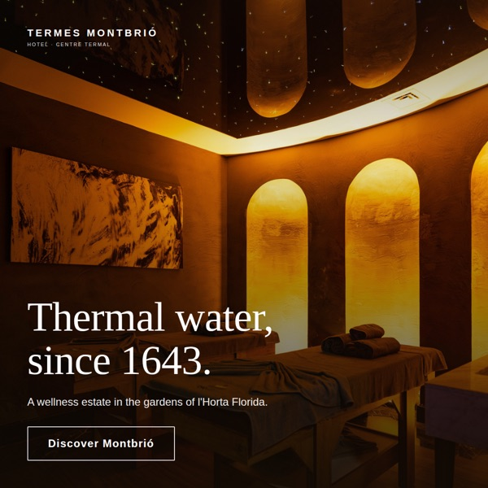
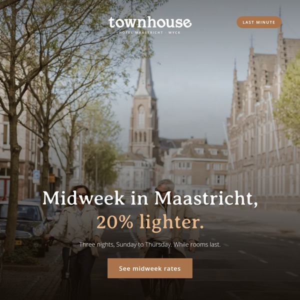
An OTA booking gives a hotel a room night.
A direct booking gives it a relationship.
Updated by hand, daily. Now automatic.
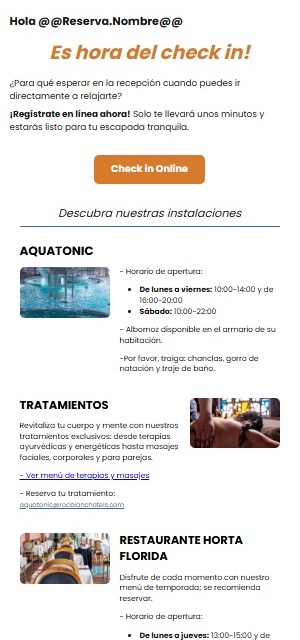
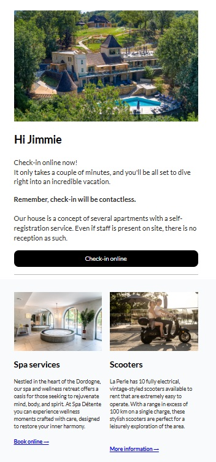
Every message in the flow — who receives it, and when it fires. One board per hotel.
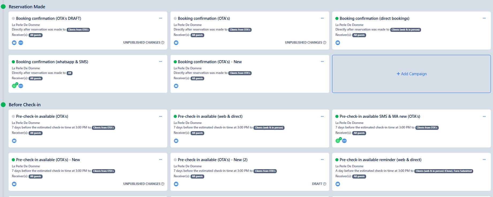
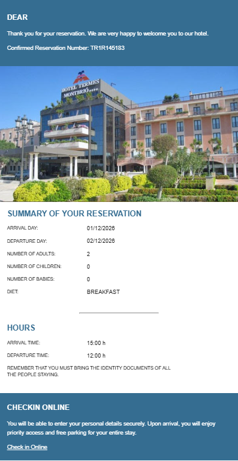
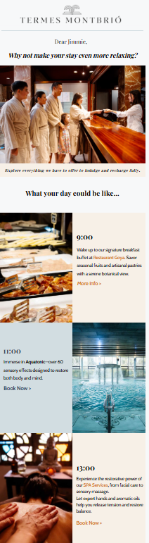
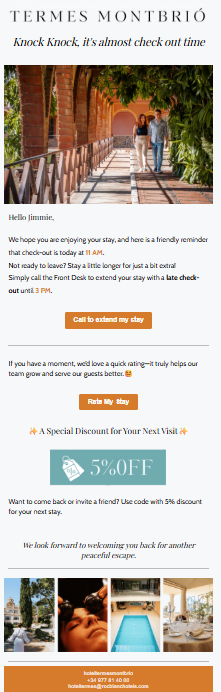
Room hours, late check-out pricing, Wi-Fi, room service, spa and treatments — the things a guest would otherwise call reception for.
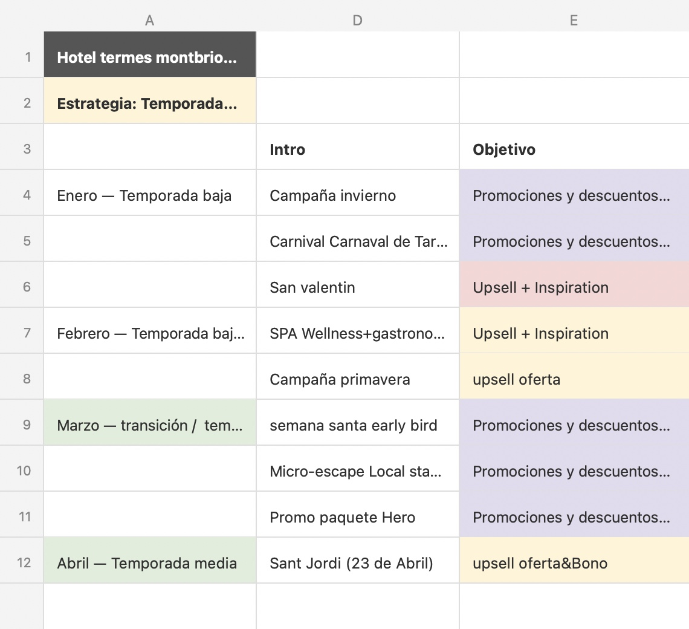
One landing page, two triggered emails — and the next stay comes direct.
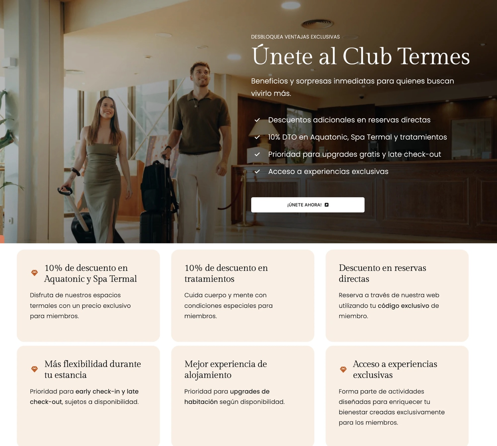
Let's build better journeys.
Barcelona · EN / ES / ZH